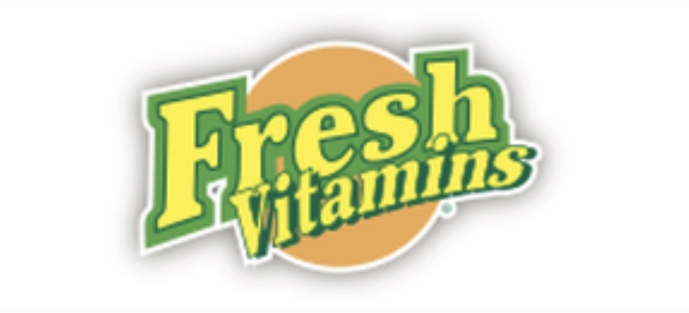
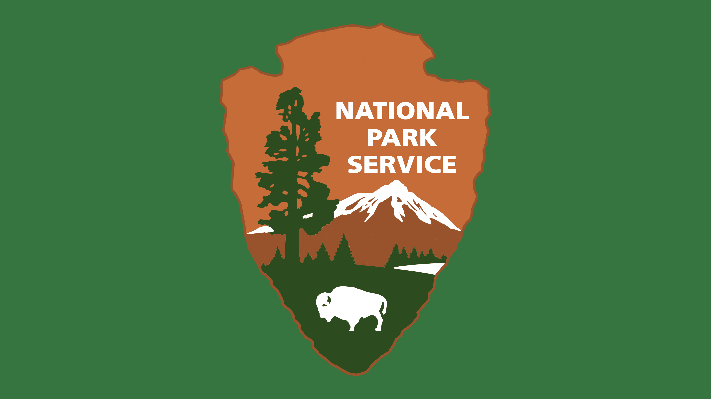

Education
Arizona State University
I am currently pursuing advanced interdisciplinary education in Arizona State University’s Integrative Arts and Sciences program, with a focus on the humanities, cultural studies, the arts, education, and professional leadership. My coursework emphasizes critical thinking, interdisciplinary research, and the application of diverse academic perspectives to real-world challenges in education and community development. My studies also incorporate advanced work in artificial intelligence and coding, where I have developed foundational skills in HTML5, CSS3, responsive web design, accessibility, usability, SEO, version control and GitHub, and website development. I currently have a 4.17 GPA.
Northern Arizona University

I attended Northern Arizona University, where I earned my Bachelor of Arts in Interdisciplinary Studies with an emphasis in Humanities. As a transfer student, I was grateful to find a degree program that allowed me to build on more than 90 completed college credits while exploring subjects such as art, technology, film, religion, literature, and the environment, with a particular emphasis on Art History. During my time at NAU, I received multiple scholarships, including the Lois Kellogg Duncan Scholarship and the Dennis H. Atkin and Family Humanities Scholarship. I was also selected as a McKenzie Fellow and received the McKenzie Endowment for Democracy for my Art History research, which I presented at the NAU Undergraduate Research Symposium. I graduated Magna Cum Laude in May 2025 and am excited to continue my education through graduate study.
Pima Community College

At Pima Community College, I pursued my academic interests through a Liberal Arts degree, exploring a wide range of subjects and diverse perspectives. My coursework included two years of American Sign Language, as well as every Astronomy and Art course offered by Pima, further deepening my love of learning. I maintained a GPA of 3.8–4.0 and gained greater confidence in my academic abilities throughout my time at Pima. My dedication to learning earned me consistent placement on the Dean’s List and membership in the Phi Theta Kappa Honor Society.
Skills
- Artificial Intelligence (AI) Training and Development
- Data Analysis and Interpretation
- Research and Academic Writing
- Consulting and Professional Advising
- Project Management and Leadership
- Education and Course Development
- Teaching, Tutoring and Mentorship
- Content Creation and Communication
- Photography and Visual Arts
- HTML5, CSS3, Responsive Web Design, Accessibility, Usability, SEO, Version Control, GitHub, Website Development
- Interdisciplinary Studies in Humanities, Arts, Comparative Cultural Studies, Education and more
- Critical Thinking and Problem-Solving
- Collaboration and Teamwork
- Time Management and Organization
Work Experience
AI Expert Consultant
Upliva - New Jersey
I consult on and manage AI training for an international, AI-driven, human-led platform focused on comprehensive wellbeing and performance. I support the development and implementation of AI systems while helping maintain AI integrity, efficiency, and effectiveness as the platform and application rapidly expand to serve individuals and employees globally.
Data Analyst: AI Expert
Micro1 - Palo Alto, California
Train and evaluate AI systems by reviewing outputs for accuracy, quality, reasoning, and alignment with project requirements. Apply expertise in AI training, data analysis, research, and evaluation to help improve model performance and reliability.
Data Analyst: AI Expert
Mercor - San Francisco, California
Evaluate and improve AI systems by analyzing data, researching, identifying areas for enhancement, and implementing strategies to boost performance and reliability. I use my interdisciplinary expertise and critical and analytical skills to drive continuous improvement and ensure the effectiveness of AI solutions across various focuses.
Educational Content Creator
YouTube: Learn Skills DailySanta Clara, California
Create and manage educational content for a YouTube channel, created by Bomberry Productions: Learn Skills Daily, we are focused on skill development and learning. I produce videos, write scripts, actively create educational documents, and engage with the audience to facilitate effective learning experiences. I translate technical lessons into accessible, clear and engaging content available online for learners of all backgrounds. Some courses I have created include tutorials on various technical subject and skill-building workshops, such as Google Docs for Research and Collaboration, Academic Presentation Skills in PowerPoint, and How to Write a Strong and Effective Research Paper.
TikTok Creator Agency Manager: Reign Legion
Reign Legion Creator Agency Manager
Manage, recruit and oversee the operations of creators on my team within the Reign Legion Creator Agency, ensuring the successful collaboration and growth of TikTok creators within the agency overall as well. I focus on personalization, strategic planning, content development, and performance optimization to enhance the agency's impact and reach on the platform. I support the creators in developing their content strategies, providing mentorship, guidance, and resources to help them improve their engagement and fostering a positive and productive work environment.
Freelance Tutor
Tutoring and Mentoring Services - Local & International
I provide personalized tutoring and mentoring services to help students and professionals achieve their learning goals. I focus on creating effective learning strategies, offering guidance, and supporting the development of critical thinking and problem-solving skills.
Freelance AI Consultant
Offering freelance AI consulting services - International & Local
I provide freelance AI consulting services to help organizations and individuals leverage artificial intelligence effectively. I focus on strategic planning, implementation, and optimization of cutting edge AI systems to drive performance and innovation.
Teacher Aide
Northern Arizona University - Remote
I assist in the educational process at Northern Arizona University, providing support to and work closely with teachers and students with regard to Art History courses at NAU, in order to enhance learning experiences and academic success. I grade assignments and provide feedback to help students improve their understanding and performance. I also participate in discussions and provide guidance and feedback to students to foster a collaborative and engaging learning environment.
Floral Delivery Services
Eric's Flower Market - Local
I provide floral delivery services to ensure timely and beautiful flower arrangements for various occasions. I focus on quality, customer satisfaction, and efficient delivery to meet the needs of all clients.
Health and Retail Services

Fresh Vitamins - Local
I provided health and retail services to support the well-being and needs of individuals in the community. I focus on delivering quality products, insight and services, ensuring customer satisfaction, and promoting healthy lifestyles. I assisted customers in selecting appropriate health products and provided guidance on maintaining a healthy lifestyle. Managed inventory,pricing, stocking, organizing and ensured the availability of products to meet customer needs.
Trail Maintenance

The National Park Service: Saguaro National Park - Local
I contributed to the maintenance and upkeep of trails within Saguaro National Park, ensuring safe and accessible pathways for visitors. I performed tasks such as clearing debris, repairing trail surfaces, building bridges, and maintaining signage to enhance the overall visitor experience and preserve the natural environment. I also assisted in organizing and participating in educational programs to raise awareness about the park's natural and cultural resources. I developed expertise in environmental stewardship and conservation efforts, as well as gained valuable experience in working in a team based group, protecting the natural environment though safe and intentional outdoor recreation and park management.
Still interested in learning more about my experiences and skills? For more details on my work, please refer to my full resume file linked below
View my full Resume.
Angela's Photography Portfolio
Explore a curated selection of my photography work, showcasing my artistic vision and technical skills. From landscapes to animals, each image reflects my passion for capturing moments and telling stories through the lens.
Desert Landscapes


View the full Desert Landscapes Portfolio here>
Flowers and Butterflies


View the full Flowers and Butterflies Portfolio here
Sunsets


View the full Night Photography Portfolio here
Birds


View the full Bird Photography Portfolio here
Reptiles and Amphibians


View more of Angela Brauer's Photography Portfolios here